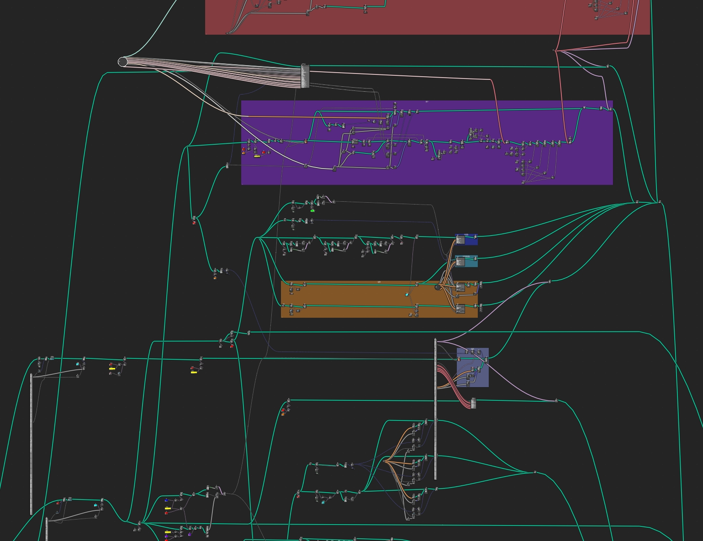

系统演示 System Demo
.png)
.png)
.png)
.png)
.png)

基于大语言模型的中国古建筑智能复原解决方案 LLM-based Chinese Ancient Architecture Reconstruction Solution
我们基于QWQ-32B微调了专门的古建筑文本领域大模型，能够从古文献中推理出建筑的形制、开间进深、屋顶样式等级等关键信息， 通过Python规则引擎输出参数化数据，在Blender中自动生成精确的3D模型，最终同步展示在Web端。 We fine-tuned a specialized LLM based on QWQ-32B for ancient architecture texts, capable of inferring architectural forms, bay depths, roof styles and grades from ancient literature. Through Python rule engines, it outputs parametric data to automatically generate accurate 3D models in Blender, finally synchronized for web display.
基于QWQ-32B微调的专业模型，能够准确理解古文献中的建筑描述，推理出建筑的具体形制参数。 Professional model fine-tuned on QWQ-32B, accurately understands architectural descriptions in ancient texts and infers specific architectural parameters.
通过Python规则引擎，将文本信息转化为精确的参数化数据，实现建筑结构的标准化描述。 Converts text information into precise parametric data through Python rule engines, achieving standardized architectural structure descriptions.
与Blender几何节点深度集成，根据参数自动生成高质量的3D建筑模型，支持多种建筑类型和风格。 Deep integration with Blender geometry nodes, automatically generates high-quality 3D architectural models based on parameters, supporting various building types and styles.
通过视窗同步技术，将Blender中的模型实时展示在Web端，用户可以交互式地查看和探索建筑细节。 Through viewport synchronization technology, displays Blender models in real-time on the web, allowing users to interactively view and explore architectural details.
构建了完整的古建筑知识图谱，涵盖不同朝代、地区的建筑特征，确保生成结果的历史准确性。 Built a comprehensive ancient architecture knowledge graph covering architectural features from different dynasties and regions, ensuring historical accuracy of generated results.
提供直观的对话式界面，用户只需输入古文献描述，系统即可自动完成从文本到3D模型的全流程。 Provides an intuitive conversational interface where users simply input ancient text descriptions, and the system automatically completes the entire process from text to 3D model.
用户输入古文献中的建筑描述 User inputs architectural descriptions from ancient texts
大模型解析文本并推理建筑参数 LLM analyzes text and infers architectural parameters
规则引擎生成标准化参数数据 Rule engine generates standardized parameter data
基于知识库进行建筑规则推理 Architectural rule reasoning based on knowledge base
Blender自动生成建筑3D模型 Blender automatically generates 3D architectural model
实时同步展示可交互3D模型 Real-time synchronized interactive 3D model display
微调大语言模型
Fine-tuned LLM
规则引擎开发
Rule Engine Development
3D建模与渲染
3D Modeling & Rendering
后端服务
Backend Service
前端展示
Frontend Display
古建筑知识库
Architecture Knowledge Base